Digital Psychrometer
Abstract
A digital psychrometer was created using two aluminum blocks fitted with thermistors connected to an Arduino. Applying a damp paper towel atop one of the blocks allowed for a wet bulb temperature to be taken. This temperature reading, in conjunction with a dry bulb temperature was used to find the relative humidity of Crosby Hall room 202 to be 63.29% on April 10th, 2019. Using this relative humidity, it was then calculated that there was 4.96kg of water vapor in the room at the time of the measurement.
Introduction
The relative humidity, specific humidity at both the wet bulb and dry bulb, enthalpy values (hf, hg, and hfg), and mass of water vapor in Crosby room 202 were desired. To do this a digital psychrometer was created using two blocks of aluminum-representing the wet and dry bulbs-instrumented with NTCALUG03A103G thermistors. These thermistors were then interfaced with an Arduino MEGA 2056 for data acquisition. A program written in VB was created to take the raw data read by the Arduino and write it to a CSV file, while also calculating all the desired outputs. A .NET GUI then neatly presented the data onto the screen for the user to view real time updates while experiment was being conducted.
Procedure
Two aluminum blocks, each fitted with a thermistor, were placed atop a styrofoam base to help isolate the experiment from any unwanted temperature influences (Figure 1).
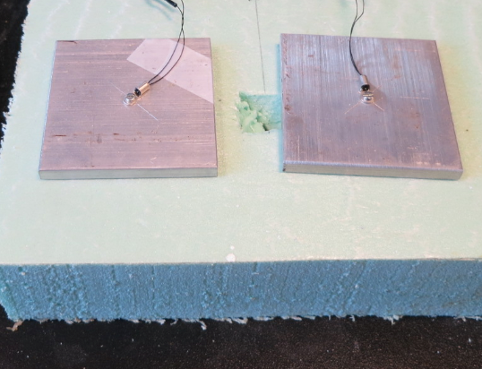Figure 1. Aluminum blocks instrumented with thermistor.
The Arduino MEGA 2056 was fitted with a shield board (Figure 2) which each thermistor connected to. Thermistor one-which serves as the wet bulb in this experiment-connected to J3-1 and J3-2. J3-1 connects to the ground on the Arduino, while J3-2 connects to the first analog input (A0). Likewise, thermistor two connected to J3-3 (ground) and J3-4 (A1) and reads the dry bulb for this experiment.
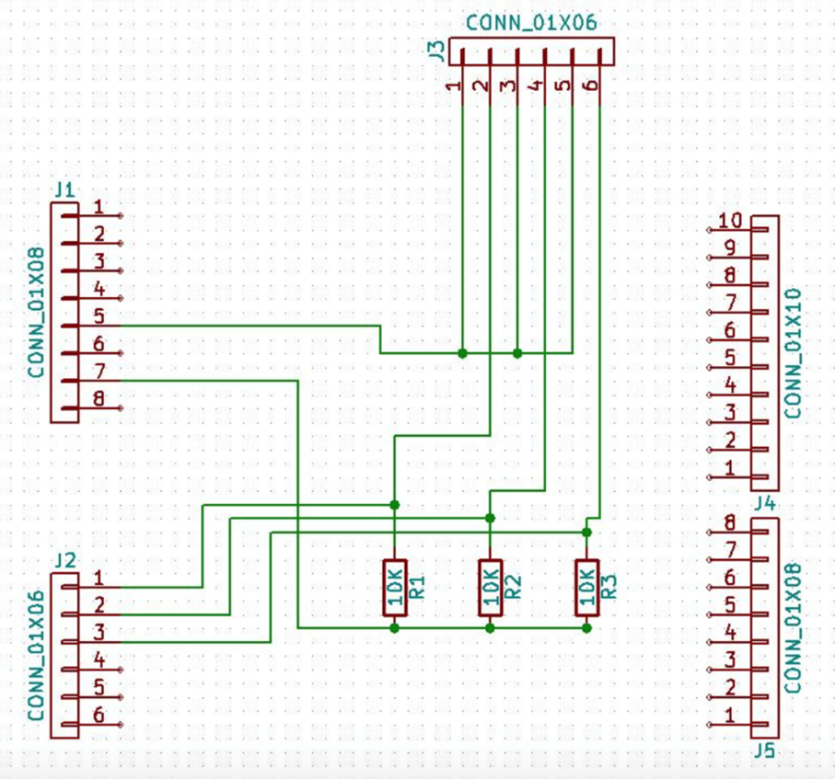Figure 2. Arduino shield wiring diagram [1].
With everything connected the experiment is ready to be performed. A damp paper towel is placed over top the wet bulb (Figure 3) and a fan is set to blow over it. The purpose of the fan is to speed up the evaporation of moisture from the damp towel, reducing the time to achieve a steady state temperature.
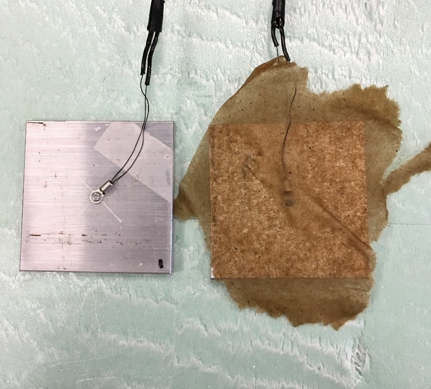Figure 3. Wet bulb and dry bulb set up. .
With the experiment running, temperature measurements are taken until the wet bulb reaches a steady temperature briefly before beginning to increase back towards room temp. This temperature is the final wet bulb temperature and the measurements taken during this period are the only ones of significance to this experiment.
Control Algorithm
The user control interface was written in VB using the .NET framework (Figure 4). This program connects with the Arduino, which serves as a slave to the PC.
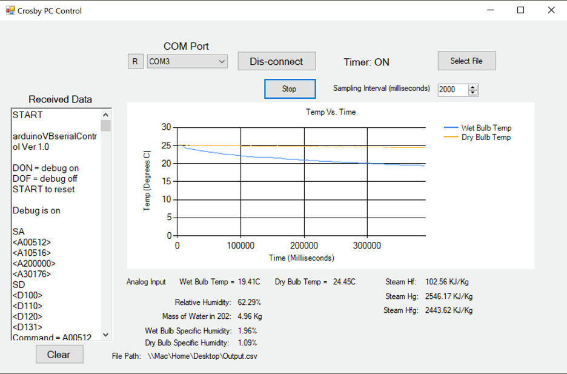Figure 4. GUI interface while experiment is being performed.
When the program first loads, the “Crosby_PC_Control_Load” sub is called. This handles simple formatting and initialization of the GUI. This includes scanning and populating the combo box with available serial ports and formatting the chart area. Once a comport is selected and the “connect” button clicked, the “connect_BTN_Click” sub attempts a handshake with the Arduino to establish connection. A connection timer is started which will attempt several times to complete a connection with the Arduino and will return an error message if unsuccessful.
Once connection has been established, the sampling timer is enabled. The sampling timer interval is set by the IntervalInput box whenever its value is changed. The sub “Timer1_Tick” handles the timer event and performs all actions associated with reading from the Arduino. This includes calling “ReceiveSerialData” to retrieve the returned string from the Arduino, then parsing the string by calling “parseData”. The parseData sub will also set the global temp1 & temp2 variables to the most recently read in values. The Timer1_Tick sub also handles writing the retrieved data to a CSV file if the data_log boolean has been set to true, as well as updating all labels on the GUI.
To convert the thermistor voltage to a temperature, the function “VoltsToTemp” is called whenever the wet bulb and dry bulb temps are updated on the screen. This function uses the Steinhart-Hart equation (Equation 1) to return the temperature of the block in degrees Celsius [2].
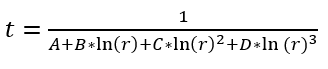Equation 1.
Where...
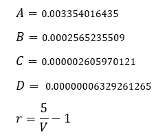Calculating the enthalpy values of the water vapor using the current dry bulb temp, three functions were created. Each of theses enthalpy functions use interpolation equations created using an excel spreadsheet. By taking the tabulated enthalpy values [3] for water between temperatures of 0 and 35 degrees Celsius (reasonable operation temperatures for this device) and putting them in a spreadsheet, lines of best fit could be determined. These three functions and their corresponding interpolation equations are; “Steam_Hg” (Equation 2), “Steam_Hfg” (Equation 3), “Steam_Hf” (Equation 4).
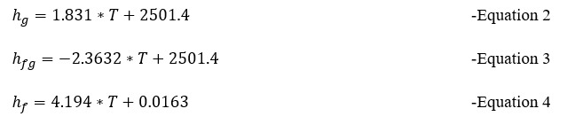Similar to the enthalpy functions, an interpolation equation was created for a saturation pressure function. The “SaturationPressure” function takes the dry bulb temp as a parameter and returns the saturation pressure using equation 5. This function serves as a helper function to “MassInRoom”.
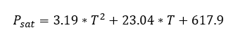Equation 5.
To calculate the mass of water vapor in room 202 Crosby, the ideal gas equation [3] is used (Equation 6). The function “MassInRoom” takes the relative humidity and dry bulb temp as parameters and returns the mass of water vapor in the room.
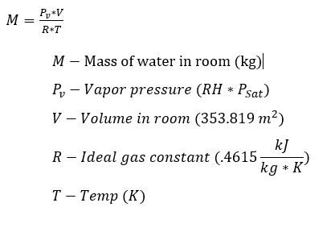Equation 6.
“WetSpecificHumidity” determines the specific humidity at the wet bulb when given the wet bulb temp, using equation 7.
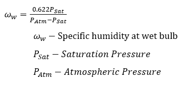Equation 7.
“DrySpecificHumidity” determines the specific humidity at the dry bulb when given the wet bulb and dry bulb temp, using equation 8.
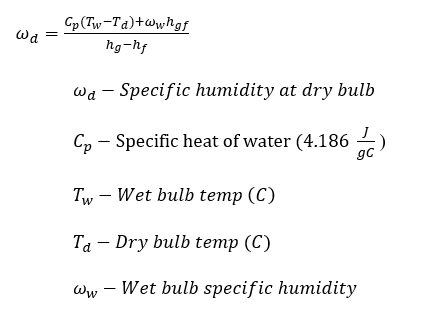Equation 8.
Other functionalities of the program include the Select File button, which calls the “SelectFileButton_Click” prompting the user for a place in which to store the CSV file. A Start/Stop data logging button which simply changes the variable Log_Data whenever the button is pressed.
Results
When this experiment was conducted on April 10th, 2019, a relative humidity of 63% was found in Crosby Hall room 202. The room temperature was at 24.45 degrees Celsius and a steady state wet bulb temp of 19.41 degrees Celsius was reached. Table 1 shows the calculated enthalpy values for water vapor at the measured room temperature.
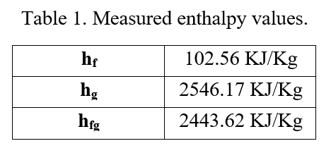When relative humidity is at 63%, there exist 4.96 Kg of water vapor in the room. A specific wet bulb humidity of 1.96% and dry bulb humidity of 1.09% was also calculated.
Refrences
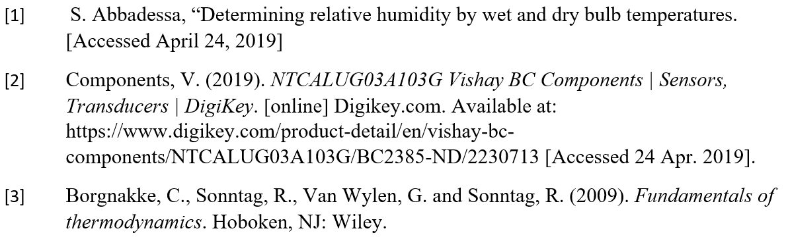